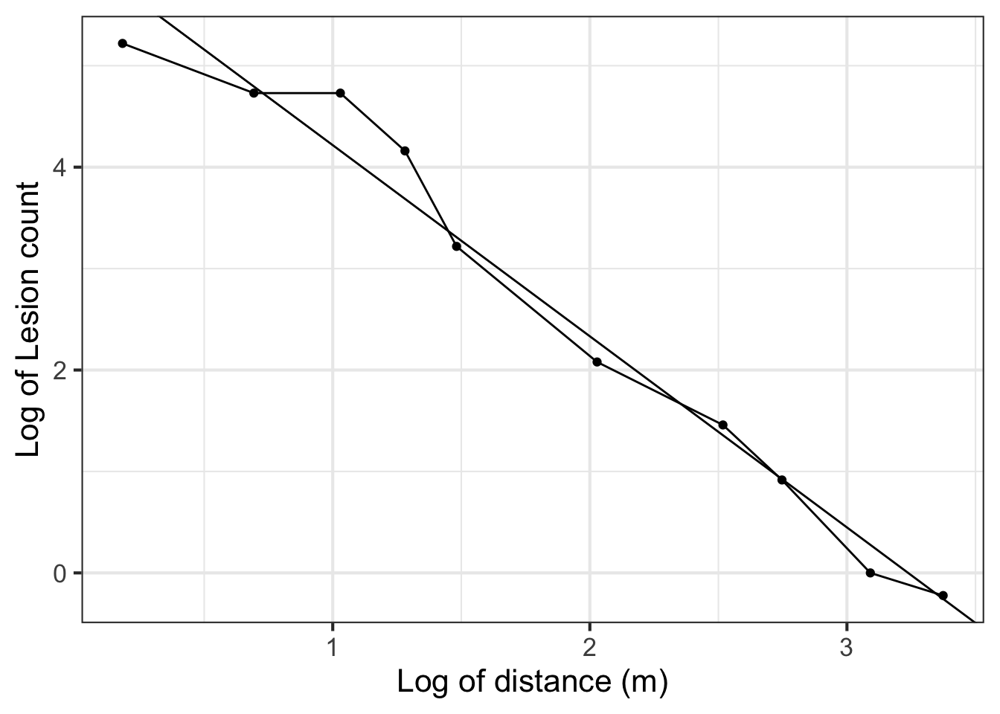

library(tidyverse)
library(ggthemes)
library(patchwork)
library(cowplot) # for themes
theme_set(theme_bw(base_size = 16)) # set global theme11 Fitting gradient models
This is a work in progress that is currently undergoing heavy technical editing and copy-editing
11.1 Dataset
The hypothetical data below shows a gradient for the number of lesions counted at varying distances in meters from the source. Let’s create two vectors, one for the distances \(x\) and the other for the lesion count \(Y\), and then a dataframe by combining the two vectors.
# create the two vectors
x <- c(0.8, 1.6, 2.4, 3.2, 4, 7.2, 12, 15.2, 21.6, 28.8)
Y <- c(184.9, 113.3, 113.3, 64.1, 25, 8, 4.3, 2.5, 1, 0.8)
grad1 <- data.frame(x, Y) # create the dataframe
grad1 # show the gradient x Y
1 0.8 184.9
2 1.6 113.3
3 2.4 113.3
4 3.2 64.1
5 4.0 25.0
6 7.2 8.0
7 12.0 4.3
8 15.2 2.5
9 21.6 1.0
10 28.8 0.811.2 Visualize the gradient
grad1 |>
ggplot(aes(x, Y))+
geom_point()+
geom_line()+
labs(y = "Lesion count",
x = "Distance (m)")
12 Linear regression
A linear regression model is fitted to the transformed variables according to the model. The higher the coefficient of determination, the better is the fit of the model to the data.
Exponential model
reg_exp <- lm(log(Y) ~ x, data = grad1)
summary(reg_exp)
Call:
lm(formula = log(Y) ~ x, data = grad1)
Residuals:
Min 1Q Median 3Q Max
-1.04868 -0.58973 -0.00144 0.59572 0.99554
Coefficients:
Estimate Std. Error t value Pr(>|t|)
(Intercept) 4.57705 0.35222 12.995 1.17e-06 ***
x -0.20124 0.02656 -7.576 6.45e-05 ***
---
Signif. codes: 0 '***' 0.001 '**' 0.01 '*' 0.05 '.' 0.1 ' ' 1
Residual standard error: 0.7612 on 8 degrees of freedom
Multiple R-squared: 0.8777, Adjusted R-squared: 0.8624
F-statistic: 57.39 on 1 and 8 DF, p-value: 6.45e-05Power law model with \(C = 0\).
reg_p <- lm(log(Y) ~ log(x), data = grad1)
summary(reg_p)
Call:
lm(formula = log(Y) ~ log(x), data = grad1)
Residuals:
Min 1Q Median 3Q Max
-0.72281 -0.11989 -0.03146 0.08755 0.65267
Coefficients:
Estimate Std. Error t value Pr(>|t|)
(Intercept) 5.5638 0.2456 22.66 1.53e-08 ***
log(x) -1.6978 0.1191 -14.26 5.71e-07 ***
---
Signif. codes: 0 '***' 0.001 '**' 0.01 '*' 0.05 '.' 0.1 ' ' 1
Residual standard error: 0.4235 on 8 degrees of freedom
Multiple R-squared: 0.9621, Adjusted R-squared: 0.9574
F-statistic: 203.3 on 1 and 8 DF, p-value: 5.71e-07Power law model with \(C = 0.4\).
reg_pm <- lm(log(Y) ~ log(x + 0.4), data = grad1)
summary(reg_pm)
Call:
lm(formula = log(Y) ~ log(x + 0.4), data = grad1)
Residuals:
Min 1Q Median 3Q Max
-0.53733 -0.17258 -0.03646 0.08450 0.56928
Coefficients:
Estimate Std. Error t value Pr(>|t|)
(Intercept) 6.1007 0.2283 26.73 4.13e-09 ***
log(x + 0.4) -1.8841 0.1084 -17.38 1.22e-07 ***
---
Signif. codes: 0 '***' 0.001 '**' 0.01 '*' 0.05 '.' 0.1 ' ' 1
Residual standard error: 0.3495 on 8 degrees of freedom
Multiple R-squared: 0.9742, Adjusted R-squared: 0.971
F-statistic: 302.2 on 1 and 8 DF, p-value: 1.223e-07Graphs for the fitted models
Exponential
grad1 |>
ggplot(aes(x, log(Y)))+
geom_point()+
geom_line()+
geom_abline(slope = coef(reg_exp)[[2]], intercept = coef(reg_exp)[[1]])+
labs(y = "Log of Lesion count",
x = "Distance (m)")
Power law model
grad1 |>
ggplot(aes(log(x), log(Y)))+
geom_point()+
geom_line()+
geom_abline(slope = coef(reg_p)[[2]], intercept = coef(reg_p)[[1]])+
labs(y = "Log of Lesion count",
x = "Log of distance")
Modified power law model
grad1 |>
ggplot(aes(log(x+0.4), log(Y)))+
geom_point()+
geom_line()+
geom_abline(slope = coef(reg_pm)[[2]], intercept = coef(reg_pm)[[1]])+
labs(y = "Log of Lesion count",
x = "Log of distance (m)")
Conclusion: The modified power law model provided the best fit.